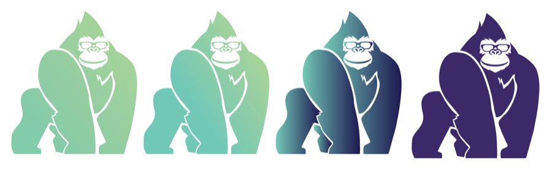
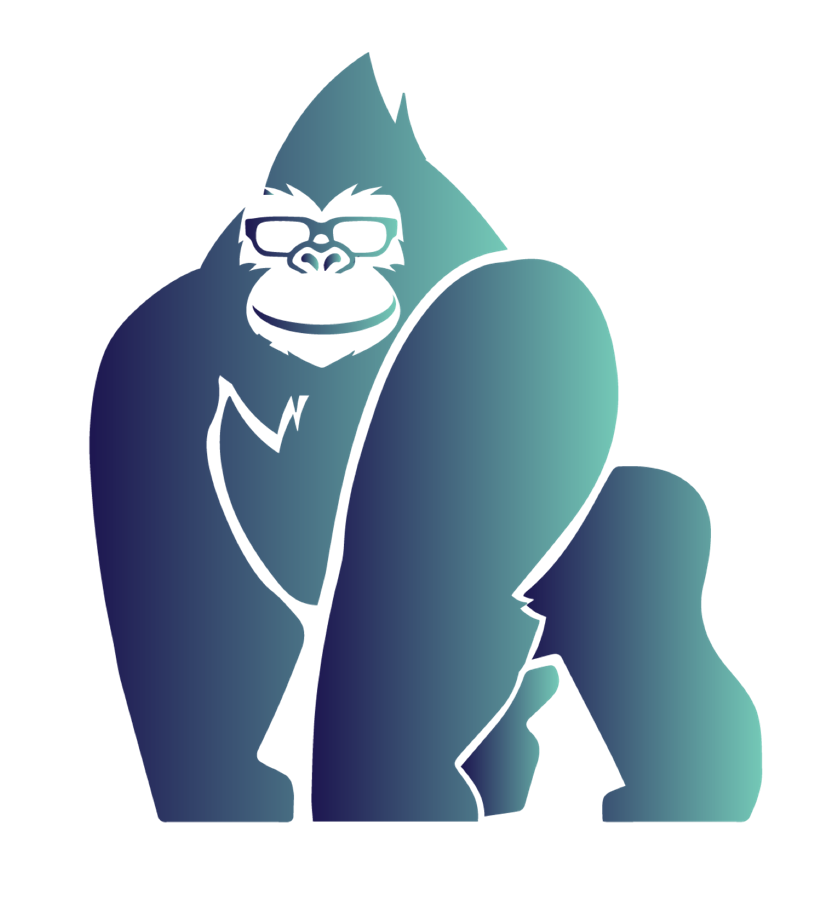
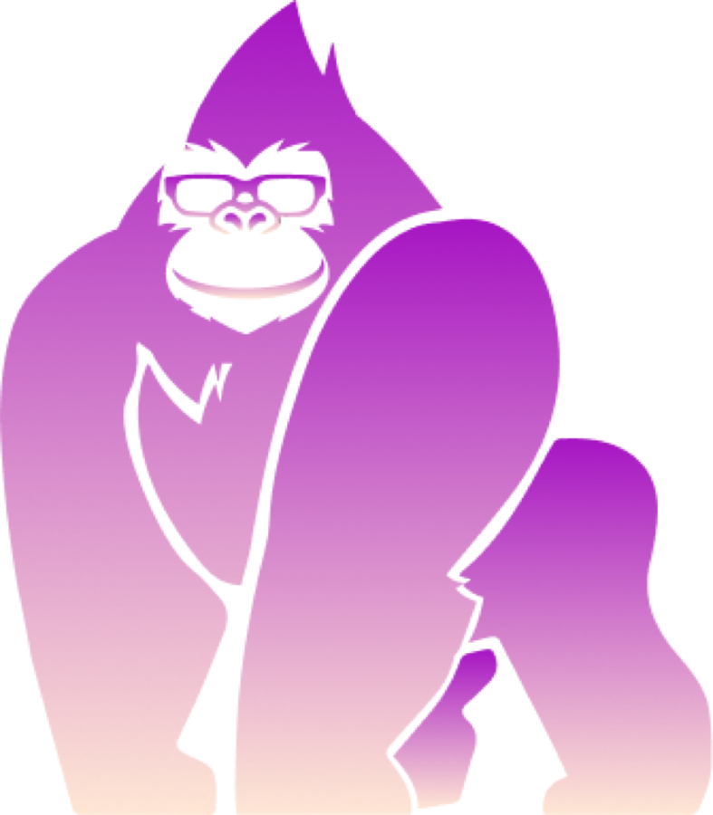
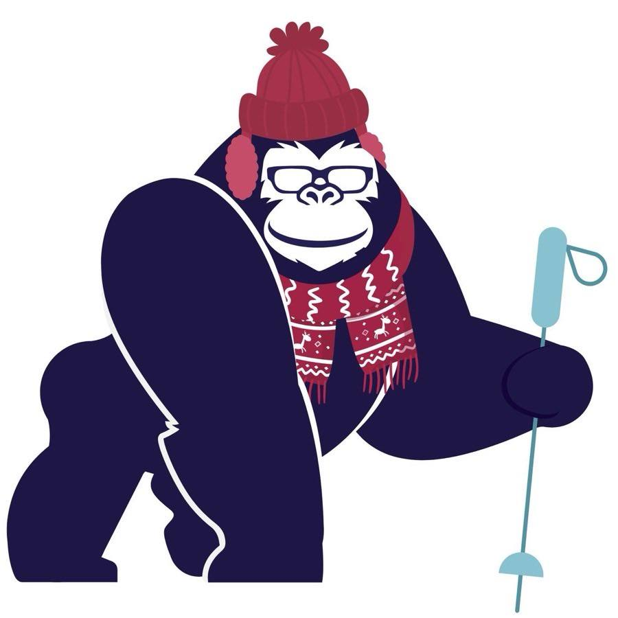
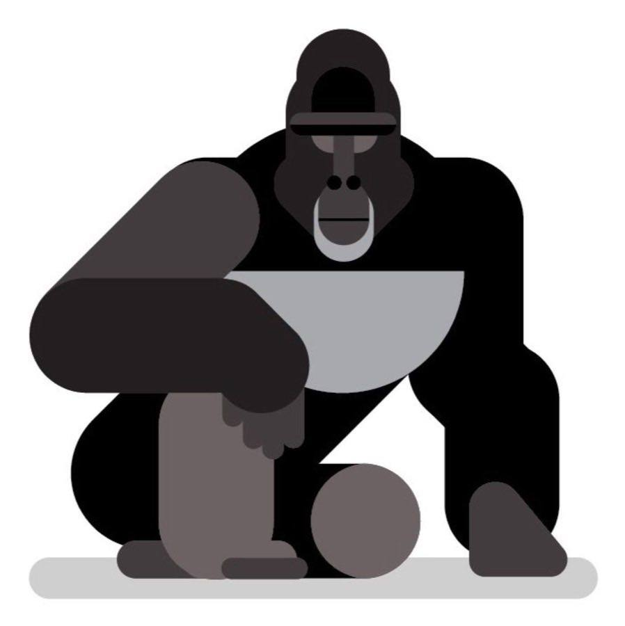
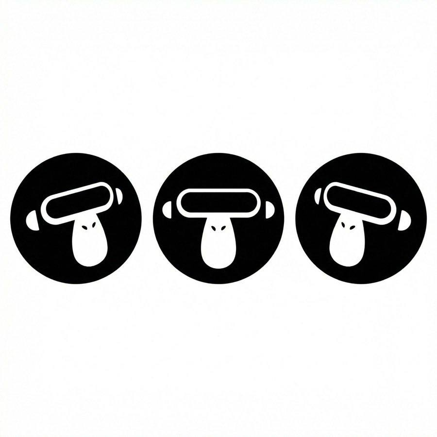

Norbie and AI-Norbie — the two mascots, their usage rules, and every exported format.
Norbie is a tribute to Norbert Hohlbein, the original owner of btis and father of our co-presidents, Paul and Jeff Hohlbein. Norbert was known for his boldness, sternness, and likability. Norbert was affectionately referred to as a gorilla by those who knew him, and his legacy lives on through our new mascot.
Usage
Norbie can be used to call attention to, or answer questions about, a particularly noteworthy piece of information or need for motivation.
Norbie

We use two different versions of Norbie. This version is primarily for our BTIS website, social media, and podcast. If you’re looking for the Norbie used in NorbieLink, see the AI-Norbie tab.
More formats
Do's & Don'ts




Usage
AI-Norbie can be used to call attention to, or answer questions about, a particularly noteworthy piece of information or need for motivation.
AI-Norbie

The AI version of Norbie is used mainly for Norbielink and any other Norbielink promotions. The AI-Norbie persona embodies the intelligence and precision of Norbielink. He represents a high-tech, efficient partner that agents can trust to power their success.